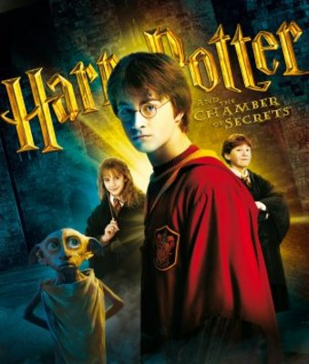

Harry Potter and the Chamber of Secrets is the second novel in the Harry Potter series, written by J. K. Rowling. The plot follows Harry's second year at Hogwarts School of Witchcraft and Wizardry, during which a series of messages on the walls of the school's corridors warn that the "Chamber of Secrets" has been opened and that the "heir of Slytherin" would kill all pupils who do not come from all-magical families. These threats are found after attacks which leave residents of the school "petrified" (frozen like stone). Throughout the year, Harry and his friends Ron Weasley and Hermione Granger investigate the attacks.